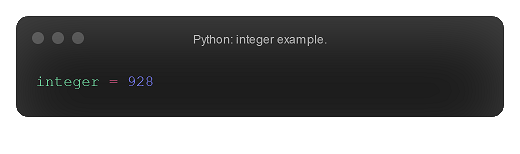
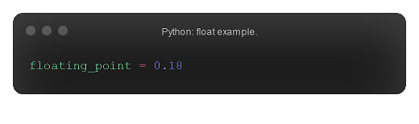
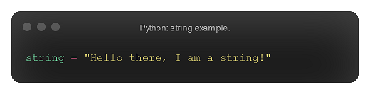
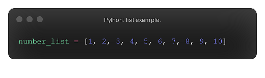
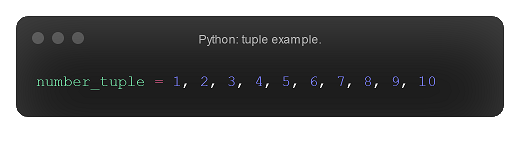

Simple datatypes
Datatypes describe what type of data the data you are working with is. There many different datatypes, but in this page we will go over the main types you will commonly use whilst programming in Python (excluding more complex types, such as dictionaries and sets, which will be covered further on in the guide!).
Integers
Integers describe any whole number. Integers, like in real life, can have many operations performed on them, which will be covered in the operations section. The range of the integer datatype can be described as
-2147483648 ≤ int ≤ 2147483647
Floats
The float datatype includes all decimal numbers. There are no fractions in Python; all fractions are calculated as floats. For example, 1/2 is equal to the float 0.5. Note that, during this calculation, the two integer values produced a floating value. The division operation always produces float values — again, this operation, and its integer counterpart, will be covered in the operations section. The range of the float datatype can be described as
-1.7976931348623157e+308 ≤ float ≤ 1.7976931348623157e+308
Ranges
Ranges are a funny datatype. When defining a range, you can define three terms: the left-most number is the starting number; the middle number is the ending number; the right-most number is the stepping number. You should note that the stopping number is never reached. The stepping number is how much the starting number increases with each step. The range datatype can be seen as producing a tuple (another datatype) of values which are determined by the three terms.

Booleans
A boolean value can only be one of two things: True, or False (note that the capital letters are important). Booleans are powerful as they allow us to create conditions, which can be used to determine which code runs — this process is known as selection.
Strings
A string is one or more characters. For example, "HELLO" is a string. However, "123" is also a string, not an integer. To tell a value from a string containing such a value, such as True vs "True", you can look at the syntax. A string value is always enclosed within single or double quotes.
Lists
A list acts as container that holds values. These values in a list are called elements. The position of an element in a list is referred to as the index of the element. For example, the first element of a list has an index of 0, the second element in a list has an index of 1, the third element in a list has an index of 2, etc. The main thing to take away from this is that indexes in Python start at 0, not 1. Furthermore, it should be mentioned that a list can hold many different datatypes.
Tuples
A tuple is similar to a list. It acts as a container that holds values, and like a list it can hold different datatypes. The difference between a tuple and a list is that a tuple is immutable, whereas a list is mutable. Immutable means that the value can not be altered during run time; you cannot append a tuple, for example. Mutable means the opposite. If you're still confused, don't worry: immutability and mutability will be covered in depth later in the guide. The syntax for a tuple, unsuprisingly, is different from that for a list. A tuple is defined by its commas, not its square brackets (most programmers surround tuples in regular brackets, though this isn't actually needed!).
